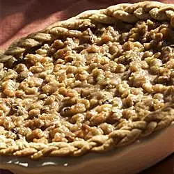

Walnut Pumpkin Pie
Description
A slight twist on the traditional pumpkin pie.
Ingredients
- 1 (9 inch) prepared graham cracker crust
- 2 cups pumpkin puree
- 1 (14 ounce) can sweetened condensed milk
- 1 egg
- ¼ teaspoons ground cinnamon
- ½ teaspoon ground ginger
- ½ teaspoon ground nutmeg
- ½ teaspoon salt
- ¼ cup packed brown sugar
- 2 tablespoons all-purpose flour
- 2 tablespoons butter
- ¾ cup chopped walnuts
Instructions
- Preheat oven to 425 degrees F (220 degrees C).
- In a mixing bowl, combine the pumpkin, condensed milk, egg, 3/4 teaspoon cinnamon, ginger, nutmeg and salt. Pour batter into the pie crust.
- Bake at 425 degrees F (220 degrees C) for 15 minutes. Reduce oven temperature to 350 degrees F (175 degrees C).
- In a small bowl, combine brown sugar, flour, and remaining 1/2 teaspoon cinnamon. Cut in the butter or margarine until the mixture is crumbly. Stir in walnuts. Sprinkle mixture evenly over the pie. Bake pie for 40 minutes or until a knife inserted one inch from the edge comes out clean. Cool and garnish as desired.